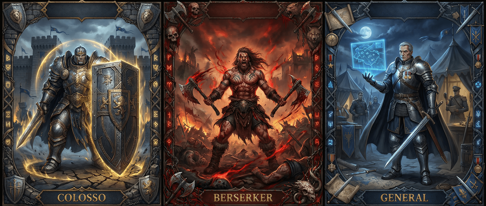

Brutalista

"Alguns nasceram para a guerra. Você é um deles. Seu corpo é sua arma. Sua resistência é sua armadura. Sua fúria é o que te mantém de pé quando outros já teriam caído."
Não importa se foi nos campos de batalha das guerras territoriais, ou nas ruas brutais onde só os fortes sobrevivem - você aprendeu que a melhor defesa é fazer o inimigo ter medo de atacar. Cicatrizes contam histórias. As suas contam uma biblioteca inteira.
⚔️ Treinamento
Você começa treinado em: Fortitude, Atacar
Escolha (1 + Mod. Inteligência) perícias: Defender, Movimento, Iniciativa, Interação Social (Intimidação), Medicina
📊 Status Iniciais
❤️ Saúde
(3 × Nível) + (Mod.CON × Nível × 6)
⚡ Stamina
(2 × Nível) + ([Mod.FOR+Mod.DES/2] × Nível × 3)
✨ Éter
(1 × Nível) + ([Mod.INT+Mod.SAB/2] × Nível × 2)
🛡️ Evasão Ativa
14 + Mod.Des + Prof.Defender + 1d10
🛡️ Evasão Passiva
14 + Mod.Destreza
📈 Progressão
| Nível | Conteúdo |
|---|---|
| 1 | 3 Técnicas |
| 2 | 4 Técnicas, Técnica de Ramo (Tier 1) |
| 3 | 5 Técnicas, 1 Marca |
| 4 | 6 Técnicas, Técnica de Ramo (Tier 1, 2), 2 Marcas |
| 5 | 7 Técnicas, Técnica de Ramo (Tier 1, 2 e 3), 3 Marcas |
⚡ Técnicas
Toda classe possui técnicas, você pode reatribuí-las livremente ao realizar um descanso longo. Você possui 3 Técnicas + Nível.
Bruto
Seus ataques corpo a corpo ignoram 2 de Armadura.
Ímpeto de Sangue
Ao derrubar um inimigo a 0 de Saúde, seu próximo ataque neste turno tem +2 Atacar e +1d6 de dano.
Finalizar
Ao causar dano, a criatura morre instantaneamente se estiver com Saúde ≤ seu Mod. Força.
Inabalável
Você tem Vantagem em testes de Fortitude ou Movimento ao ser movido contra sua vontade.
Agarrão
+2 em testes de Movimento ao realizar Agarrar. Alvos agarrados recebem 1d6+Mod.For de dano ao sofrer ataques.
Casca Grossa
Você tem Armadura (Ar) natural equivalente ao seu Mod. Fortitude.
Empurrão
Ao empurrar um alvo com sucesso, ele recebe 1d6 de dano por cada 3m empurrado. +2d6 se colidir com obstáculo.
Destruir
Ao acertar ataque corpo a corpo, adicione +1d6 de dano por 2 Stamina gastos. Máximo = Nível.
Ranger os Dentes
Ao receber dano, reduza em 1d6 por 2 Stamina gastos. Máximo = Nível.
Provocar
Escolha um inimigo em até 9m que possa te ouvir. Vontade ou deve te atacar no próximo turno.
Hoje Não
1x/descanso longo: ao ser reduzido a 25% HP ou menos, recupere 2d8+Mod.Con de Saúde.
Gancho
Seu próximo ataque corpo a corpo Atordoa o alvo se ele falhar em Fortitude.
O Próximo
Escolha um alvo visível: +2 Atacar contra ele até fim do combate. Ao errar, +1 Atacar cumulativo (max +3). Se morrer, pode trocar o alvo por 2 Stamina.
Golpe Desconcertado
Declare antes de atacar: Vantagem no próximo ataque. Se errar, fica Exposto até seu próximo turno.
Investida
Investir em linha reta (4,5m-9m). Alvos no caminho: Fortitude ou 1d6+Mod.For de dano e ficam Caídos.
🌿 Ramos
Os ramos são caminhos, características únicas do seu personagem. Diferente das técnicas, são irreversíveis.
Marcas de Ramo: Que construiu ao longo da sua vida, moldando sua PERSONALIDADE.
Técnicas de Ramo: Que aprendeu ao longo do seu treinamento definindo seu ESTILO DE AGIR.
É extremamente aceitável que você misture os 3 ramos. Ao longo da criação você escolherá: 3 Marcas e 6 Técnicas de Ramo (3 no Tier 1, 2 no Tier 2 e 1 no Tier 3).
🛡️ Ramo do Colosso
Você não aprendeu a desviar de golpes - aprendeu a recebê-los e continuar de pé. Onde outros veem perigo, você vê seu propósito. Seu corpo é a muralha que separa seus aliados da morte.
🔥 Ramo do Berserker
A primeira vez que você sentiu a fúria, achou que ia morrer. O sangue fervendo, a visão vermelha, o mundo reduzido a um único pensamento: destruir. A raiva não é sua fraqueza - é seu combustível.
👑 Ramo do General
Guerras não são vencidas pelo mais forte - são vencidas pelo mais preparado. Força bruta é ferramenta, não estratégia. O verdadeiro guerreiro lê o combate como outros leem livros.
🔥 Marcas de Ramo
🛡️ Marcas do Colosso
Cicatrizes de Ferro
Para cada 5 combates ganhos ao longo de sua vida, você ganha +1 Fortitude permanente. Ao chegar em +5, essa habilidade fica supérflua.
Ao receber dano protegendo um aliado, você ganha +1 de Stamina.
Imortal
Enquanto estiver com metade ou menos da vida: +2 Armadura (Ar) Natural.
Ao ser reduzido a 0 de Saúde, pode escolher não morrer como ação livre voltando a 1 de Saúde. Ao fazer isso, você ganha +1 de Exaustão.
🔥 Marcas do Berserker
Contador de Corpos
Para cada 10 criaturas que você matou, ganha +1 permanente em Atacar. Ao chegar em +5, essa habilidade fica supérflua.
Ao matar uma criatura brutalmente, você ganha +1 de Stamina e perde 1 de Éter.
Vício em Sangue
Ao acertar um ataque corpo a corpo, seu próximo ataque tem +1 Atacar cumulativo (máx +3). Ao errar, o bônus é reduzido a 0.
Ao estar com +3 em Atacar, seus acertos críticos causam +1d10 de dano adicional.
👑 Marcas do General
Olhos do Estrategista
Para cada combate vencido onde você usou Comando Tático ou Leitura de Combate pelo menos uma vez, você ganha +1 permanente em Percepção. Ao chegar em +5, essa habilidade fica supérflua.
Combates vencidos onde nenhum aliado caiu Morrendo recuperam 1d6 de Stamina a todos os aliados.
Plano do General
Você pode elaborar um plano de combate e designar um objetivo. Se a condição ocorrer conforme o plano, você e aliados em até 9m ganham UMA recompensa: Vantagem em um teste, +4 Iniciativa, ou inimigos ficam Expostos por 1 rodada.
⚡ Técnicas de Ramo
Tier 1
Nível 2+🛡️ Colosso
Muralha Viva
PassivaVocê se torna Treinado em Defender. Se já for Treinado, se torna Experiente.
O treinamento da sua perícia Defender aumenta de 3 em 3 (ao invés de 2 em 2).
Guardião
PassivaQuando um aliado adjacente (até 1,5m) for atacado, você pode usar sua reação para se tornar o alvo do ataque.
Você pode usar Defender normalmente contra esse ataque.
Postura Defensiva
1 Ação, 3 StaminaAté o início do próximo turno: +2 Defender, +2 Ar Natural, não pode ser Derrubado ou Empurrado.
Porém: Não pode se mover e -2 em Atacar.
🔥 Berserker
Fúria Sanguinária
PassivaVocê se torna Treinado em Atacar. Se já for Treinado, se torna Experiente.
Dano adicional por saúde perdida: Abaixo de 75%: +1 | Abaixo de 50%: +3 | Abaixo de 25%: +5
Frenesi
3 Ações, 3 StaminaEntra em Frenesi até fim do combate: +2 Atacar, +1 dado de dano, Resistência a Dano Ordinário.
Porém: Não pode Defender, fica descontrolado, deve atacar toda rodada. 1x/descanso longo (2x no nível 3).
Retaliação Selvagem
ReaçãoAo Retaliar: +2 Atacar e +1d6 dano.
Se abaixo de 50% HP: +4 Atacar e +2d6 dano.
👑 General
Veterano de Guerra
PassivaVocê se torna Treinado em Iniciativa. Não pode ser Desprevenido.
No primeiro turno de qualquer combate, você e aliados em até 9m têm +2 em Iniciativa.
Comando Tático
1 Ação, 2 StaminaAliado em até 9m pode como reação: Atacar (+2), Mover (sem oportunidade), ou Defender (+4). Máximo 2x/rodada.
Leitura de Combate
1 Ação, 2 StaminaRole Percepção vs Enganação de uma criatura. Sucesso: Descubra saúde, próxima ação, ou fraqueza tática (+2 Atacar). Falha: Não pode usar contra ela neste combate.
Tier 2
Nível 4+🛡️ Colosso
Fortaleza de Aço
Reação, 2 StaminaReduza dano recebido em 1d8+Mod.Con. Em Postura Defensiva: 2d8+Mod.Con.
Usos por combate: Mod. Constituição (mínimo 1).
Resistência Adaptável
Passiva / 3 StaminaVocê possui 5 Armadura Específica (Ae) de um tipo escolhido.
Ao receber dano de tipo diferente, pode gastar 3 Stamina para trocar instantaneamente.
🔥 Berserker
Epifania Sanguínea
PassivaAo matar criatura: recupera 1d6+Mod.Con HP. Ao sofrer crítico: próximo ataque causa +1d10.
Em Frenesi: Esses bônus dobram.
Ignorar Dor
Reação, 3 StaminaQuando dano te deixaria Inconsciente: permaneça com 1 HP. Ganha +4 Atacar e +2d6 dano até fim do próximo turno. 1x/descanso longo.
👑 General
Formação de Combate
2 Ações, 3 StaminaPrecisão: 2+: +2 Atacar | 3+: +1 Atacar | 4+: +1,5m Movimento | 5+: Acerto dá +2 Atacar ao próximo aliado
Degolar: 2+: +1 Dano | 3+: +1d6 | 4+: +1d6 | 5+: Execução dá 1 ação grátis
O Experiente
Passiva1º ataque recebido de criatura: +2 Defender. Após ser atacado, aprende ela: +1 Atacar/Defender cumulativo (max +3).
1x/turno ao acertar: +1d6 dano, Desarmar, ou -2 no próximo ataque dela.
Tier 3 — Ultimates
Nível 5 • 1x/Dia🛡️ A Última Parede
Runas douradas surgem em sua armadura. Por 1 minuto: aumenta tamanho, não pode ser movido, Armadura dobra, Resistência a todos os danos, Guardião funciona em 4,5m como ação livre, aliados em 4,5m ganham +4 Defender e +2 Resistência. 1x/combate pode redirecionar dano fatal de aliado (até 9m) para você.
💀 O Custo
Não pode atacar durante o efeito. Ao acabar, ganha Exaustão 1.
🔥 Despertar A Besta
Pré-requisito: Abaixo de 25% HP. Por 3 rodadas: +3d6 dano, Vantagem em ataques, movimento dobra, imune a Amedrontado/Enfeitiçado/Atordoado/Inconsciente, dano fatal te deixa com 1 HP. Ao matar: 2d10 HP, move 4,5m e ataca como ação livre.
💀 O Custo
Ao final das 3 rodadas, cai Inconsciente automaticamente por 1 minuto.
👑 Campo de Batalha
Aliados em até 18m por 1 minuto: +3 Atacar/Defender/Resistência, imunes a Amedrontado/Enfeitiçado, recuperam 2d6 HP e 1d6 Stamina. Podem mover como ação livre sem oportunidade. Insistir: 1x cada aliado repete ataque errado. Passo Final: 1x sua reação faz todos atacarem o mesmo alvo. Comando Tático fica grátis.
💀 O Custo
Cada vez que aliado afetado sofrer dano, você perde 1 de Éter.